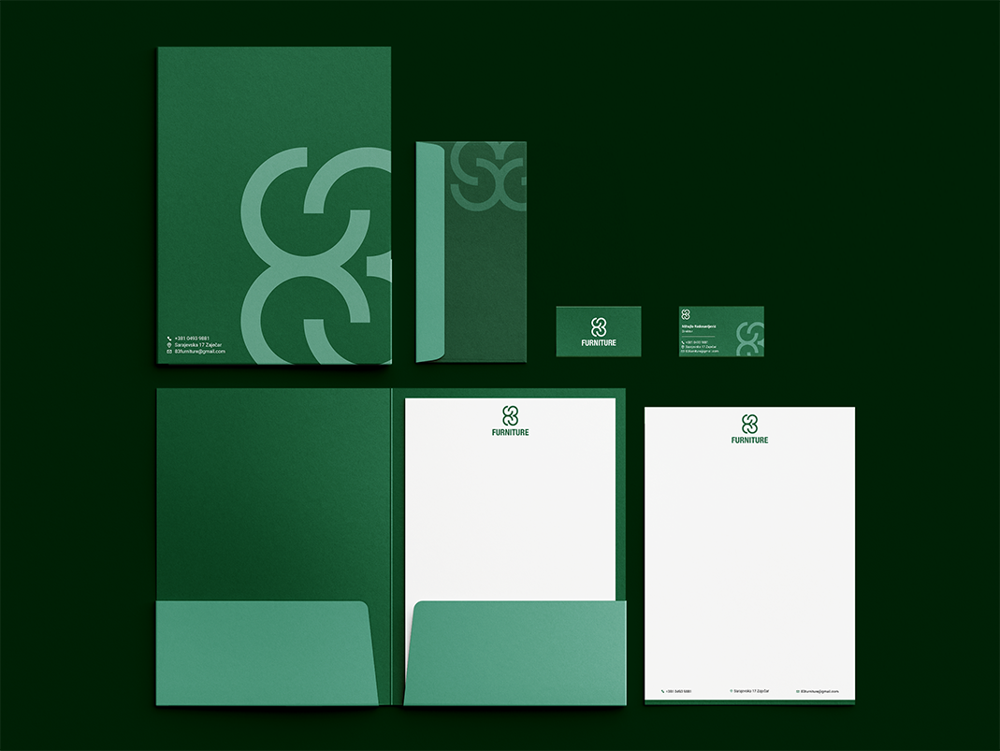
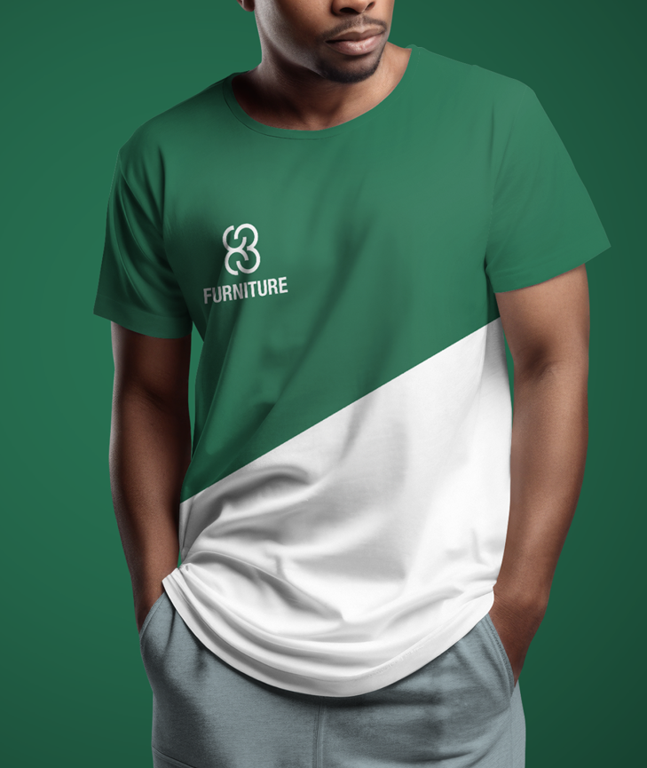
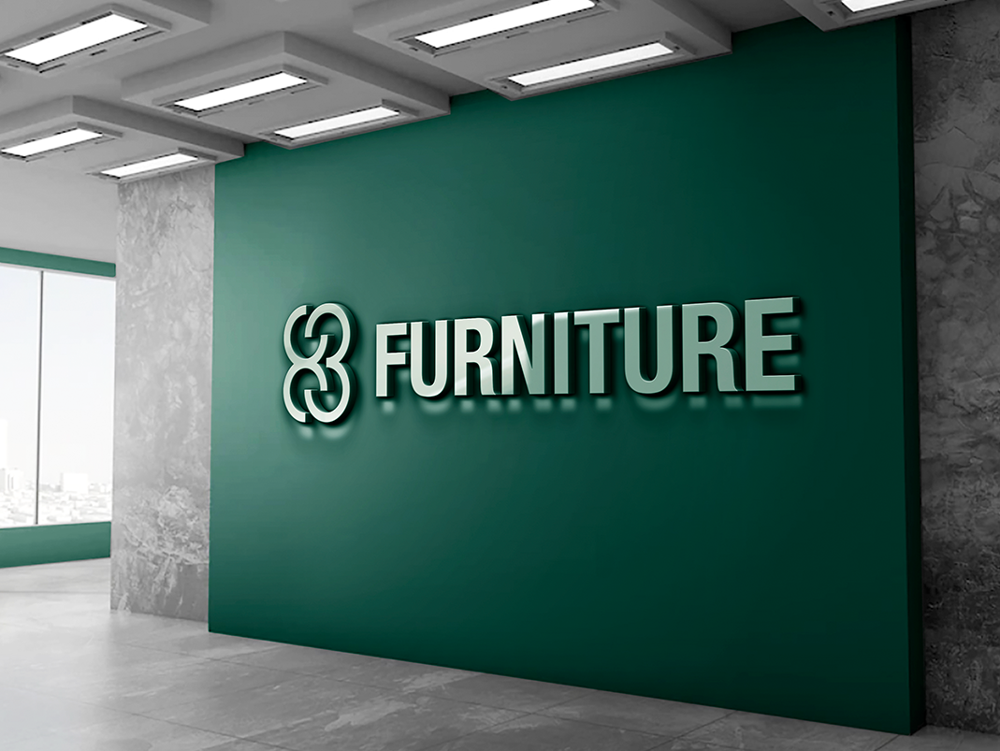

Znak koji nastaje iz samog imena brenda brojevi 8 i 3 upleteni jedan u drugi dok ne počnu da liče na spojene stranice ili naslonjene daske nameštaja.



83 Furniture je zamišljen brend nameštaja za koji je trebalo izgraditi identitet od nule, počev od samog znaka. Ideja je bila da broj "83" ne stoji samo kao oznaka, već da njegove cifre fizički prionu jedna uz drugu 8 i 3 su iscrtani tako da dele isti luk i uklapaju se kao dva spojena predmeta, što posredno podseća na zanatski, ručno sklopljen komad nameštaja.
Rezultat je dokumentovan u knjizi grafičkih standarda: pravila za korišćenje znaka, odnos znaka i naziva "FURNITURE" u punom logotipu, kao i tamnozelena paleta koja identitetu daje topao, ali ozbiljan i postojan karakter u skladu sa materijalima poput drveta i kože koje brend nameštaja prirodno prati.